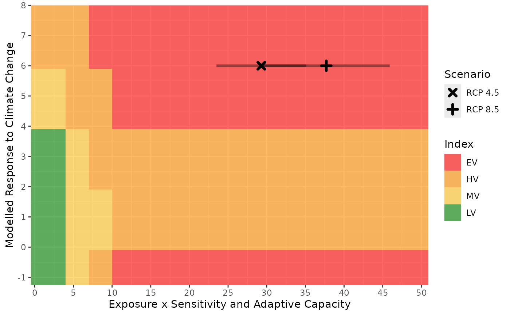

A graph to visualize where the result falls relative to the thresholds used to calculate index values and how the combination of the D score and B/C score affects the overall index value.
plot_score_index(score_df)ggplot2 graph.
The colours show the location of the thresholds used to determine the index, the points show the score for each scenario and the lines show the range of scores produced by the Monte Carlo simulations. Multiple scenarios are identified by different symbols
base_pth <- system.file("extdata", package = "ccviR")
# scenario names
scn_nms <- c("RCP 4.5", "RCP 8.5")
clim_vars <- get_clim_vars(file.path(base_pth, "clim_files/processed"),
scenario_names = scn_nms)
spat_res <- analyze_spatial(
range_poly = sf::read_sf(file.path(base_pth, "rng_poly.shp"), agr = "constant"),
scale_poly = sf::read_sf(file.path(base_pth, "assess_poly.shp"), agr = "constant"),
clim_vars_lst = clim_vars,
hs_rast = terra::rast(c(file.path(base_pth, "rng_chg_45.tif"),
file.path(base_pth, "rng_chg_85.tif"))),
hs_rcl = matrix(c(-1, 0, 1, 1, 2, 3), ncol = 2),
scenario_names = scn_nms
)
#> performing spatial analysis
#> Warning: More than 10% of the range change raster does not match the expected values.
#> Is the classification table correct?
# vulnerability factor table with score 1 (somewhat increase vulnerability)
# for all factors
vuln <- make_vuln_df("test_species", val1 = 1, mig = 1)
vuln$Value2[c(5, 7, 9)] <- 3
index_vuln <- calc_vulnerability(spat_res$spat_table, vuln, "Bird")
#> calculating vulnerability index RCP 4.5
#> performing monte carlo
#> finished vulnerability
#> calculating vulnerability index RCP 8.5
#> performing monte carlo
#> finished vulnerability
plot_score_index(index_vuln)
